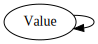
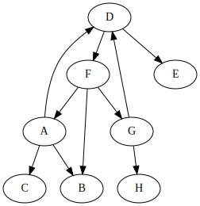

I ran into a graph problem recently.
One day I'll write a bdlat-compatible C++ class
generator. It will allow you to write things like basic.bdlat:
(package basic
(import core)
(type Value
"a generic value in a restricted type system"
(choice
("integer" core/integer)
("decimal" core/decimal)
("string" core/string)
("optional" (optional Value))
("array" (array Value))))
and then do something like
$ bat-codegen --language c++ --toplevel Lakos --component types basic.bdlat
to produce the files basic_types.h and basic_types.cpp containing the C++
class Lakos::basic::Value.
Here's a first shot at what the definition of Lakos::basic::Value might look
like:
class Value {
bdlb::Variant<int64_t,
bdldfp::Decimal64,
bsl::string,
bdlb::NullableValue<Value>,
bsl::vector<Value> >
d_data;
public:
// ...
};
We've already run into trouble. Value's size depends on its own size. To work
around this, a level of indirection is needed. Suppose the class template
Allocated<T> were a wrapper around a heap-allocated T referred to by a
T*, but with value semantics rather than pointer semantics (i.e. copying the
Allocated<T> copies the referred to T instance). Then Value can be
defined as:
class Value {
bdlb::Variant<int64_t,
bdldfp::Decimal64,
bsl::string,
bdlb::NullableValue<Allocated<Value> >,
bsl::vector<Allocated<Value> >
d_data;
public:
// ...
};
That would work.
When a type depends upon itself, it doesn't necessarily do so by having itself
as a member (as was nearly the case with Value above). It could be that the
type contains a type that contains the original type. Or it could be that the
type contains a type that contains a type that contains the original type, etc.
Generally, a type A contains a type B if any of the following is true:
A is a sequence or a choice having an element of type BA is a sequence or a choice having an element of type (optional B)A is a sequence or a choice having an element of type (array B)We can think of a set of types as a directed graph where an edge points from
A to B if A contains B. Let's call such a directed graph a dependency
graph.
Then A depends upon B if A contains B or if A contains a C
where C depends upon B. That is, A depends upon B if there exists a
directed path from A to B in the dependency graph.
The graph for the types in (package basic ...), above, looks like this:

Not very interesting. But suppose it looked like this instead:
